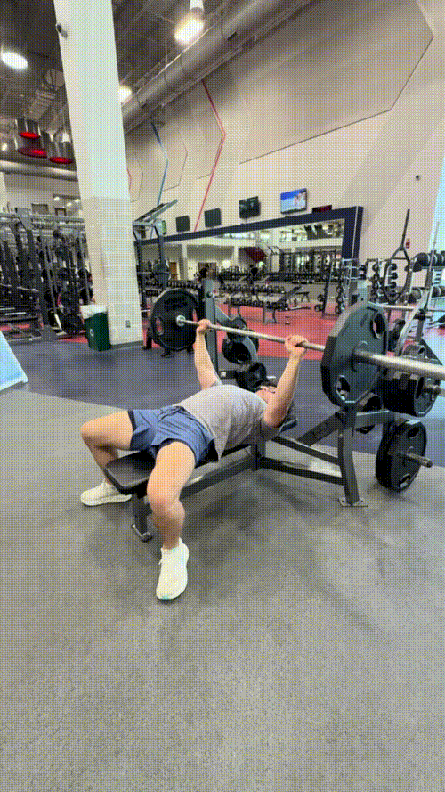

Bench Press


How to Perform
Lie flat on the bench with your eyes positioned underneath the bar. Place your hands slightly wider than shoulder-width apart and grip the bar firmly. Keep your feet planted on the floor and your upper back against the bench.
Unrack the bar and bring it over your chest with your arms extended. Lower the bar under control toward the middle of your chest while keeping your elbows slightly tucked. Press the bar back up until your arms are extended without excessively flaring your elbows.
Primary Muscles
Pectoralis major (Chest)
Secondary Muscles
Triceps brachii (Triceps) and anterior deltoids (Front Delt)